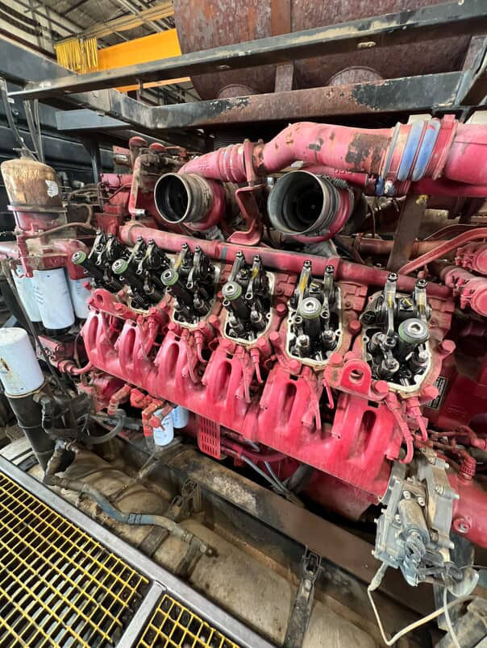
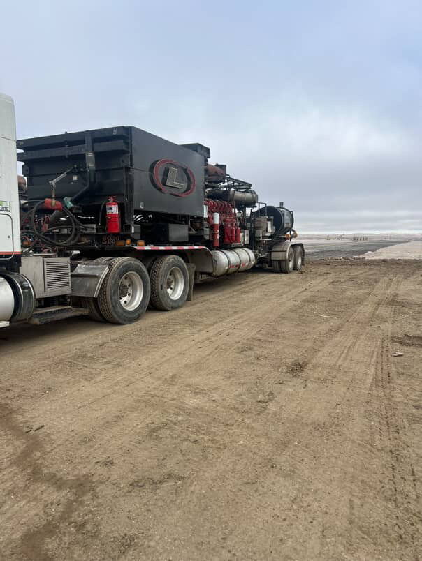
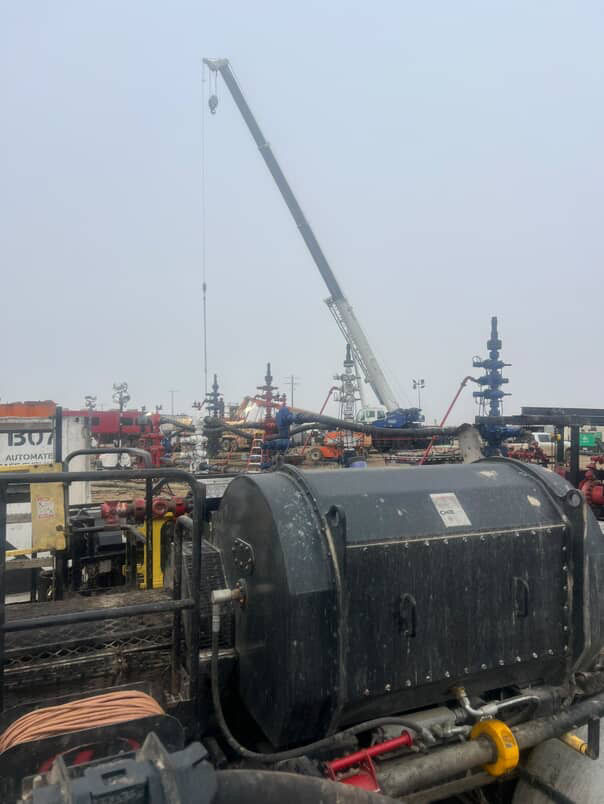

Life After Blanson

After graduating from Blanson, I started working in the oilfield as a fracture equipment/diesel mechanic thanks to my brother, who helped me get the job at Liberty Energy. My time at Blanson definitely helped having shop experience and gave me a good foundation for hands-on work and understanding how to use and stay safe around tools and equipment.
I can honestly say I love what I do. It is not easy, though the job is both physically and emotionally demanding. I work 12-hour shifts for 14 straight days, handling heavy equipment and dealing with the constant pressure that comes with operating frac pumps. Being away from home for two weeks at a time can be tough, but having my brother on the same rotation makes it easier.
Leaving Houston
Leaving Houston was bittersweet. I miss my family and friends (and definitely the food), but I don't miss the traffic! I still keep up with my friends, mostly by sending each other TikToks when we can.
I would not say I live in North Dakota, it is more like staying in a "man camp" where everyone working away from home stays. Williston is significantly smaller than Houston, and since most people work in the oilfield, prices are higher, and life feels more focused on work. Houston's definitely more diverse and fast-paced.


Filed under After Graduation